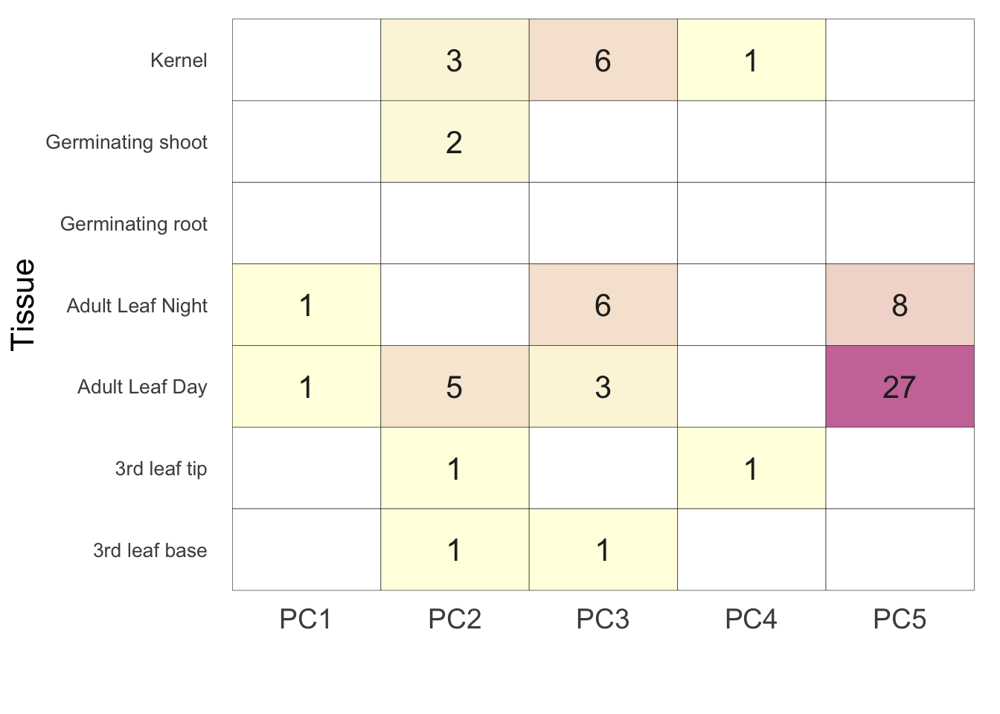
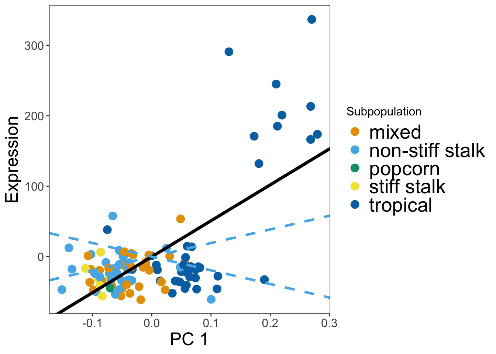
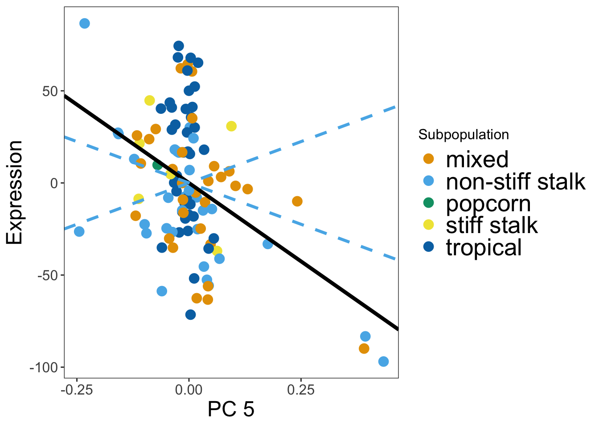
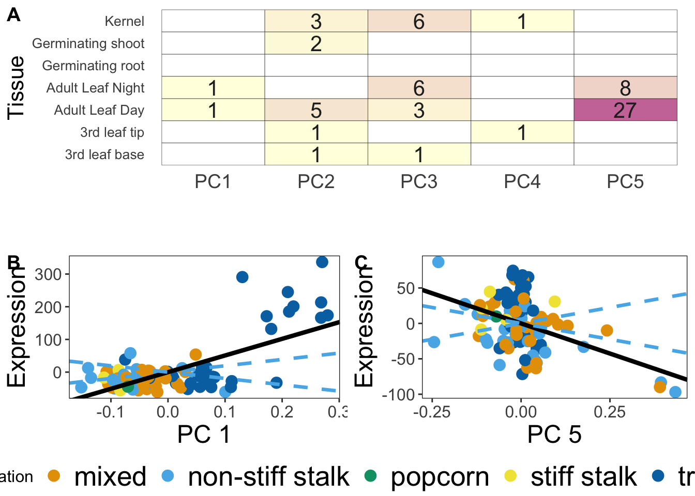

Last updated: 2020-04-23
Checks: 7 0
Knit directory: Blancetal/analysis/
This reproducible R Markdown analysis was created with workflowr (version 1.6.0). The Checks tab describes the reproducibility checks that were applied when the results were created. The Past versions tab lists the development history.
Great! Since the R Markdown file has been committed to the Git repository, you know the exact version of the code that produced these results.
Great job! The global environment was empty. Objects defined in the global environment can affect the analysis in your R Markdown file in unknown ways. For reproduciblity it’s best to always run the code in an empty environment.
The command set.seed(20200217) was run prior to running the code in the R Markdown file. Setting a seed ensures that any results that rely on randomness, e.g. subsampling or permutations, are reproducible.
Great job! Recording the operating system, R version, and package versions is critical for reproducibility.
Nice! There were no cached chunks for this analysis, so you can be confident that you successfully produced the results during this run.
Great job! Using relative paths to the files within your workflowr project makes it easier to run your code on other machines.
Great! You are using Git for version control. Tracking code development and connecting the code version to the results is critical for reproducibility. The version displayed above was the version of the Git repository at the time these results were generated.
Note that you need to be careful to ensure that all relevant files for the analysis have been committed to Git prior to generating the results (you can use wflow_publish or wflow_git_commit). workflowr only checks the R Markdown file, but you know if there are other scripts or data files that it depends on. Below is the status of the Git repository when the results were generated:
Ignored files:
Ignored: .DS_Store
Ignored: .RData
Ignored: .Rhistory
Ignored: .Rproj.user/
Ignored: data/.DS_Store
Ignored: data/df_STAR_HTSeq_counts_B73_match_based_on_genet_dist_DESeq2_normed_rounded.txt
Ignored: output/.DS_Store
Ignored: output/Identifying_Selected_Genes/.DS_Store
Ignored: output/Selection_on_Expression_of_Cold_Response_Genes/.DS_Store
Ignored: output/Selection_on_expression_of_coexpression_clusters/.DS_Store
Untracked files:
Untracked: analysis/scratch.Rmd
Untracked: data/quaint-results.rda
Unstaged changes:
Modified: analysis/Drought-genes.Rmd
Modified: analysis/Expression_plots.Rmd
Note that any generated files, e.g. HTML, png, CSS, etc., are not included in this status report because it is ok for generated content to have uncommitted changes.
These are the previous versions of the R Markdown and HTML files. If you’ve configured a remote Git repository (see ?wflow_git_remote), click on the hyperlinks in the table below to view them.
| File | Version | Author | Date | Message |
|---|---|---|---|---|
| Rmd | 47b41db | jgblanc | 2020-04-23 | Ready to publish individual genes section |
| Rmd | 8298d4d | GitHub | 2020-04-16 | Merge branch ‘master’ into master |
| html | 8298d4d | GitHub | 2020-04-16 | Merge branch ‘master’ into master |
| Rmd | a98d9a4 | em | 2020-04-16 | stuff |
| Rmd | 1ac0628 | em | 2020-04-16 | stuff |
| Rmd | be3ef3c | em | 2020-04-10 | ready for pull requset? |
| html | be3ef3c | em | 2020-04-10 | ready for pull requset? |
| Rmd | 94badb2 | em | 2020-04-09 | stuff |
| Rmd | cf43de2 | em | 2020-04-01 | stuff |
| Rmd | fa0c86f | em | 2020-03-30 | stuff |
| html | fa0c86f | em | 2020-03-30 | stuff |
| Rmd | 6b00f47 | em | 2020-03-27 | stuff |
| html | 6b00f47 | em | 2020-03-27 | stuff |
| Rmd | 640b45a | em | 2020-03-24 | drought genes |
| html | 640b45a | em | 2020-03-24 | drought genes |
| Rmd | 682f50e | em | 2020-03-23 | stuff |
| html | 682f50e | em | 2020-03-23 | stuff |
| Rmd | 450bded | em | 2020-03-19 | more plots |
| html | 450bded | em | 2020-03-19 | more plots |
| Rmd | 626d202 | em | 2020-03-19 | num sig genes |
| Rmd | 2688954 | em | 2020-03-18 | merge conflict ugh |
| Rmd | 8c52f3c | Em | 2020-03-17 | stuff |
| html | b7f1f85 | jgblanc | 2020-03-13 | Build site. |
| Rmd | 1b91cdb | jgblanc | 2020-03-13 | added quanit html |
| Rmd | dec95d3 | Em | 2020-03-04 | pc figures |
| html | dec95d3 | Em | 2020-03-04 | pc figures |
| Rmd | 993e4b7 | Em | 2020-03-03 | mroe stuff |
| html | 993e4b7 | Em | 2020-03-03 | mroe stuff |
| Rmd | a2e0aec | Em | 2020-02-27 | drought gene analysis |
| html | a2e0aec | Em | 2020-02-27 | drought gene analysis |
| Rmd | c018f1d | Em | 2020-02-26 | added drought info |
| Rmd | 227a4b6 | Em | 2020-02-26 | added figure |
| html | 227a4b6 | Em | 2020-02-26 | added figure |
| Rmd | a597c91 | Em | 2020-02-26 | stuff |
| html | a597c91 | Em | 2020-02-26 | stuff |
Here we identify genes whose expression is under divergent selection along the first 5 principal components in the dataset using the R package QUAINT. We have data for 7 different tissue types, the number of lines and genes per tissue is recorded in table S1. The mean centered expression values for the genes for each tissue type are stored in “data/Mean_centered_expression/tissuename.txt”. The kinship matrices, generated from 78,324 randomly chosen SNPs for each tissue type, are stored in “../data/Kinship_matrices/F_tissuename”.
This function takes in a tissue name as an argument and returns the results of calcQpc() for each gene. calcQpc() takes a vector of traits (\(Z_1, Z_2, ...Z_m\)), the matrix of eigenvectors (\(\vec{U_1}, \vec{U_2}, ...\vec{U_m}\)) and vector of eigenvalues (\(\lambda_1, \lambda_2, ... \lambda_m\)) generated form the eigen decomposition of the kinship matrix, the range of PCs used to estimate \(V_a\) and the range of PCs you want to test for selection. Here our trait values are the mean centered expression values and we use the last half of PCs to estimate \(V_a\) and test for selection along the first 5 PCs. calcQpc() outputs a list that includes the \(c_m\) values (see equation 2) for the 5 PCs we are testing for selection along with the p-value from the F-test (see equation 3). The testAllGenes function runs calcQpc() on all genes and outputs the above information for every gene.
############ function for testing all genes
testAllGenes <- function(myTissue){
# Read in mean-centered expression values
df1 <- read.table(paste("../data/Mean_centered_expression/",myTissue,".txt",sep=""))
geneNames = names(df1)
# Read in tissue specific kinship matrix
myF <- read.table(paste('../data/Kinship_matrices/F_',myTissue,'.txt',sep=""))
## Get Eigen Values and Vectors
myE <- eigen(myF)
E_vectors <- myE$vectors
E_values <- myE$values
## Testing for selection on first 5 PCs
myM = 1:5
## Using the last 1/2 of PCs to estimate Va
myL = 6:dim(myF)[1]
## test for selection on each gene
allGeneOutput <- sapply(1:ncol(df1), function(x){
myQpc = calcQpc(myZ = df1[,x], myU = E_vectors, myLambdas = E_values, myL = myL, myM = myM)
return(c(geneNames[x],myQpc))
})
return(allGeneOutput)
}Now we will run the test for selection on all of our tissue types.
###run on all genes
alltissues = c('GRoot',"Kern","LMAD26","LMAN26", "L3Tip","GShoot","L3Base")
alltissueresults = lapply(alltissues, testAllGenes)
names(alltissueresults) <- alltissuesNow lets look at the number of gene with FDR < 0.01 for each tissue
##look at sig results
sigresults = lapply(1:length(alltissues), function(i){
# extract the pvalues
pvals = matrix(unlist(alltissueresults[[i]][5,]), ncol=5, byrow=TRUE) #each row corresponds to a gene, columns are to PCs
##look at pvalue distributions
# par(mfrow=c(3,2), mar=c(4,4,1,1))
# sapply(1:5, function(x){
# hist(pvals[,x], border="white", col = "darkgray", main="", breaks = 20, xlab = paste('PC ',x,' ',alltissues[i],sep=""))
# })
## test fpr significance with the fdr
pfdr = data.frame(apply(pvals,2, function(x){p.adjust(x, method='fdr')}))
## how many are significant?
numsig <- apply(pfdr, 2, function(x){sum(x<0.1)})
numsig
})
###make a big image of how many sig results we have
sigTable = as.data.frame(matrix(unlist(sigresults), ncol=5, byrow=T))
names(sigTable) = c('PC1','PC2','PC3','PC4','PC5')
sigTable$nicename = c('Germinating root', 'Kernel','Adult Leaf Day', 'Adult Leaf Night', '3rd leaf tip', 'Germinating shoot','3rd leaf base')
sigTable PC1 PC2 PC3 PC4 PC5 nicename
1 0 0 0 0 0 Germinating root
2 0 3 6 1 0 Kernel
3 1 5 3 0 27 Adult Leaf Day
4 1 0 6 0 8 Adult Leaf Night
5 0 1 0 1 0 3rd leaf tip
6 0 2 0 0 0 Germinating shoot
7 0 1 1 0 0 3rd leaf basesigLong = tidyr::gather(sigTable, 'variable','value', -nicename)
sigLong[sigLong == 0] <- NA
###save output for other analyses
save(alltissueresults, sigTable, sigLong, file = "../data/quaint-results.rda")We can also check how many of our significant genes are unique. Here 60 of 66 significant genes are unqiue to their tissue/PC combination.
#how many unique genes???
siggenes = unlist(lapply(1:length(alltissues), function(i){
# extract the pvalues
pvals = matrix(unlist(alltissueresults[[i]][5,]), ncol=5, byrow=TRUE) #each row corresponds to a gene, columns are to PCs
pfdr = data.frame(apply(pvals,2, function(x){p.adjust(x, method='fdr')})) ## test fpr significance with the fdr
pfdr$numsig <- apply(pfdr, 1, function(x){sum(x<0.1)})
pfdr$genes = unlist(alltissueresults[[i]][1,])
return(dplyr::filter(pfdr, numsig>0)$genes)
}))
length(unique(siggenes)) ##number of unique genes[1] 60Now that we have a table with the number of significant genes per tissue. let’s make a heat map of them with ggplot. This is Figure 1A in the paper.
pl <- ggplot(data=sigLong,aes(x=variable,y=nicename)) +
geom_tile(aes(fill=value),color='black') + scale_fill_gradient(low = 'lightyellow', high = "#CC79A7", guide = FALSE, na.value = "white") + theme_bw() + xlab("\n") + ylab("Tissue") +
theme(axis.ticks=element_blank(),panel.border=element_blank(),panel.grid.major = element_blank(), axis.text.y = element_text(size=10,angle=0), axis.title.y = element_text(size=16),axis.title.x = element_text(size=16),axis.text.x = element_text(angle = 0, hjust = 0.5,size=14)) + geom_text(aes(label=value),colour="grey15",size=5.5)
plWarning: Removed 20 rows containing missing values (geom_text).
Make a table of the sample sizes - Table S1.
mySampleTable = sapply(alltissues, function(myTissue){
df1 <- read.table(paste("../data/Mean_centered_expression/",myTissue,".txt",sep=""))
numGenes = dim(df1)[2]
numInds = dim(df1)[1]
return(c(numGenes,numInds))
})
rownames(mySampleTable) = c('genes','individuals')
mySampleTable GRoot Kern LMAD26 LMAN26 L3Tip GShoot L3Base
genes 10500 9814 8879 8435 8489 10195 11555
individuals 232 207 109 110 237 239 236Here we have a function that allow’s us to plot expression vs PC
### function for making plots
makeGenePlot <- function(tissue, geneIndex, pc){
## read in population data
pop <- read.csv("../data/FlintGarciaTableS1_fixednew.csv", stringsAsFactors = F)
## read in expression data
exp <- read.table(paste("../data/Mean_centered_expression/",tissue,".txt", sep=""), stringsAsFactors = F)
expgene = data.frame(Inbred = row.names(exp), geneexp = exp[,geneIndex], stringsAsFactors = F)
## merge data together
pop_dat <- dplyr::inner_join(pop, expgene, by= "Inbred")
#get the eigenvalues
myF <- read.table(paste('../data/Kinship_matrices/F_',tissue,'.txt', sep=""))
myE = eigen(myF)
myPC = data.frame(pc = myE$vectors[,pc], stringsAsFactors = F)
pop_dat <- dplyr::bind_cols(pop_dat, myPC)
lambda <- myE$values[pc]
##calculate the CIs
generesults = alltissueresults[[tissue]][,geneIndex]
myVaest = var0(generesults$cml)
myCI = 1.96*sqrt(myVaest*lambda)
##gene name
geneName = names(exp)[geneIndex]
lR <- lm(pop_dat$geneexp ~ pop_dat$pc)
coeff <- lR$coefficients[[2]]
if(tissue=="LMAD26"){mylab = c("mixed", "non-stiff stalk", "popcorn", "stiff stalk", "tropical")} else{mylab = c("mixed", "non-stiff stalk", "popcorn", "stiff stalk", "sweet", "tropical")} ##no sweets in LMAD26
col <- c('#E69F00', '#56B4E9', "#009E73", "#F0E442", "#0072B2", "#D55E00", "#CC79A7")
pl1 <- ggplot(data=pop_dat, aes(x = pc, y= geneexp , color=Subpopulation)) + scale_colour_manual(values = col, labels=mylab) + xlab(paste("PC",pc)) + ylab("Expression") + theme_bw() + theme(panel.grid.major = element_blank(), text = element_text(size=15), panel.grid.minor = element_blank(), axis.title.y = element_text(size=18), axis.title.x = element_text(size=18), legend.position = "right", legend.title = element_text(size = 12), legend.text = element_text(size = 20), plot.title = element_text(hjust = 0.5)) + geom_point(size = 3.5) + geom_abline(slope = myCI, linetype = 2, col = '#56B4E9', size=1.2) + geom_abline(slope = coeff, size = 1.5)+ geom_abline(slope = -myCI, linetype = 2, col = '#56B4E9', size=1.2)
return(pl1)
}Here we will plot Figure 1B and 1C. The code bellow can be modified to make expression plots for different gene and different tissues by changing the tissue name in the first line and giving the index of the gene you want to plot. The index can be found by finding the column number
myTissue = 'LMAD26'
df1 <- read.table(paste("../data/Mean_centered_expression/",myTissue,".txt",sep=""))
geneNames = names(df1)
## Pick name of gene to plot and plot vs PC
gene_index <- which(geneNames == "GRMZM2G152686")
pc1_plot = makeGenePlot(tissue = myTissue,geneIndex = gene_index, pc = 1)
pc1_plot
## Pick name of gene to plot and plot vs PC
gene_index <- which(geneNames == "GRMZM2G069762")
pc5_plot = makeGenePlot(tissue = myTissue,geneIndex = gene_index, pc = 5)
pc5_plot
Make Final Figure
final <- ggarrange(pl,
ggarrange(pc1_plot, pc5_plot, ncol = 2, labels = c("B", "C"),common.legend = T, legend = "bottom"),
nrow = 2,
labels = "A"
)Warning: Removed 20 rows containing missing values (geom_text).final
sessionInfo()R version 3.6.2 (2019-12-12)
Platform: x86_64-apple-darwin15.6.0 (64-bit)
Running under: macOS High Sierra 10.13.6
Matrix products: default
BLAS: /Library/Frameworks/R.framework/Versions/3.6/Resources/lib/libRblas.0.dylib
LAPACK: /Library/Frameworks/R.framework/Versions/3.6/Resources/lib/libRlapack.dylib
locale:
[1] en_US.UTF-8/en_US.UTF-8/en_US.UTF-8/C/en_US.UTF-8/en_US.UTF-8
attached base packages:
[1] stats graphics grDevices utils datasets methods base
other attached packages:
[1] tidyr_1.0.2 quaint_0.0.0.9000 ggpubr_0.2.5 magrittr_1.5
[5] reshape2_1.4.3 ggplot2_3.2.1 workflowr_1.6.0
loaded via a namespace (and not attached):
[1] Rcpp_1.0.3 plyr_1.8.5 compiler_3.6.2 pillar_1.4.3
[5] later_1.0.0 git2r_0.26.1 tools_3.6.2 digest_0.6.25
[9] evaluate_0.14 lifecycle_0.1.0 tibble_2.1.3 gtable_0.3.0
[13] pkgconfig_2.0.3 rlang_0.4.4 yaml_2.2.1 xfun_0.12
[17] gridExtra_2.3 withr_2.1.2 stringr_1.4.0 dplyr_0.8.4
[21] knitr_1.28 vctrs_0.2.3 fs_1.3.1 cowplot_1.0.0
[25] rprojroot_1.3-2 grid_3.6.2 tidyselect_1.0.0 glue_1.3.1
[29] R6_2.4.1 rmarkdown_2.1 farver_2.0.3 purrr_0.3.3
[33] whisker_0.4 ellipsis_0.3.0 backports_1.1.5 scales_1.1.0
[37] promises_1.1.0 htmltools_0.4.0 assertthat_0.2.1 colorspace_1.4-1
[41] ggsignif_0.6.0 httpuv_1.5.2 labeling_0.3 stringi_1.4.6
[45] lazyeval_0.2.2 munsell_0.5.0 crayon_1.3.4